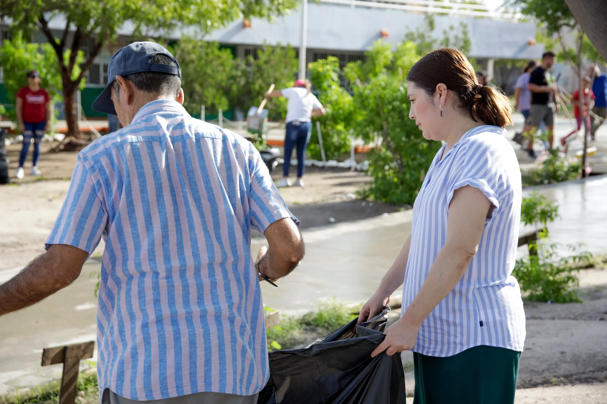

CECyTE en Tu Comunidad
#CECyTEsComunidad
Construyendo puentes entre la educación y la sociedad, transformando comunidades a través del compromiso y la solidaridad.

Comunidad Activa
Transformando vidas juntos

Honores

Deportes
Comunidad
Unidos
Solidaridad
Compromiso